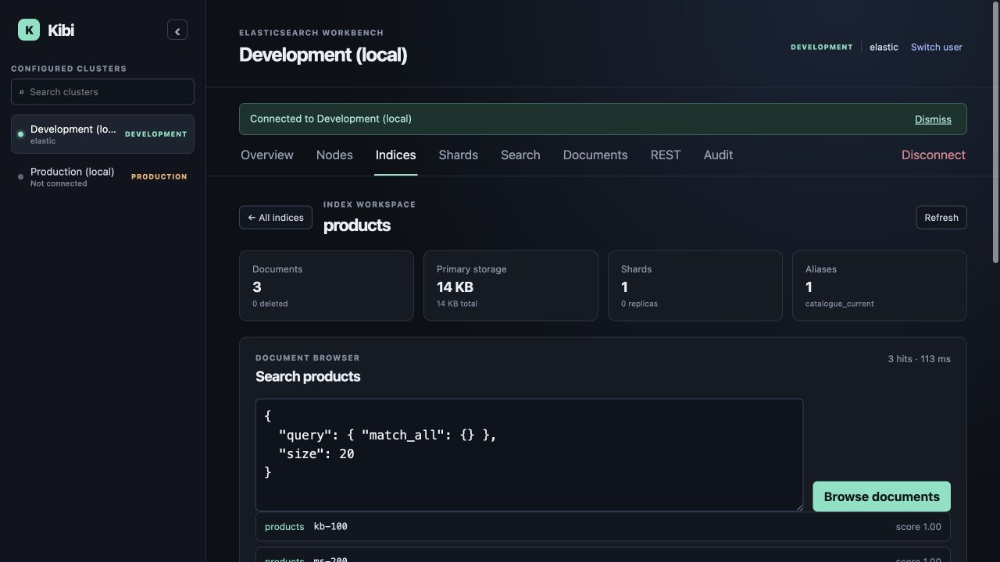

Built for search engineering
All the Elasticsearch surfaces you use. None of the product bloat you do not.
Kibi keeps everyday operational tools close: cluster health, nodes, indices, shards, document search, raw JSON, and a practical REST console.
Inspect and act
Understand shard placement before you change anything.
The shard map makes primaries, replicas, relocation, and unassigned copies visible by node. Drill into raw detail when an operational question needs more context.
See the product screenshots →
● ● ● REST consolePOST /_search
{
"size": 20,
"query": { "match_all": {} }
}
✓ request recorded in local query history
REST without starting from blank
Recipes for the requests engineers actually run.
Browse searchable examples for health, allocation, mappings, node statistics, aggregations, document operations, and more. Save favourites and revisit browser-local history per cluster.